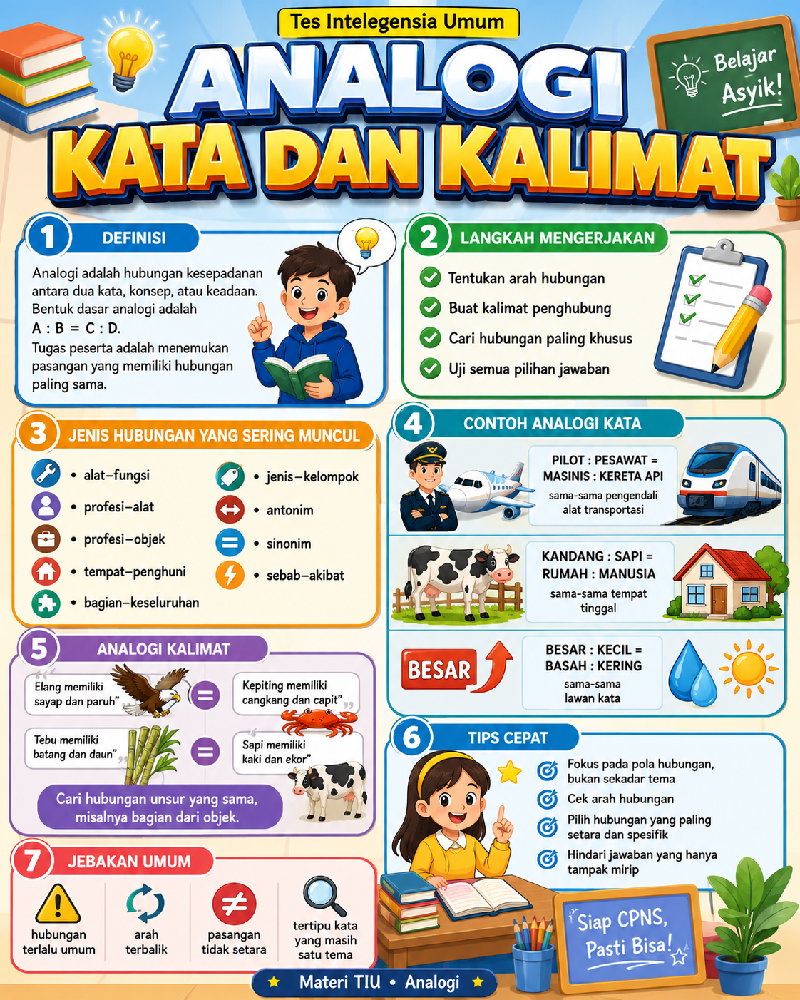
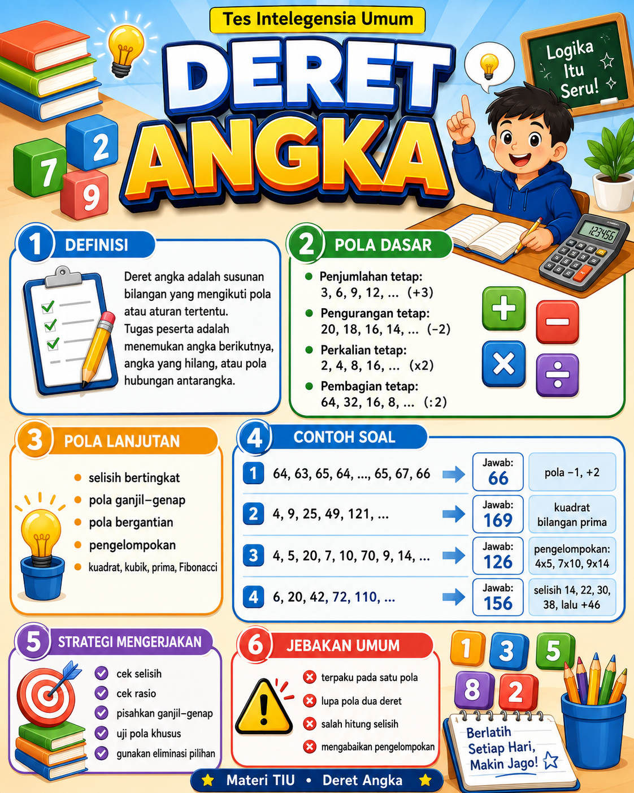
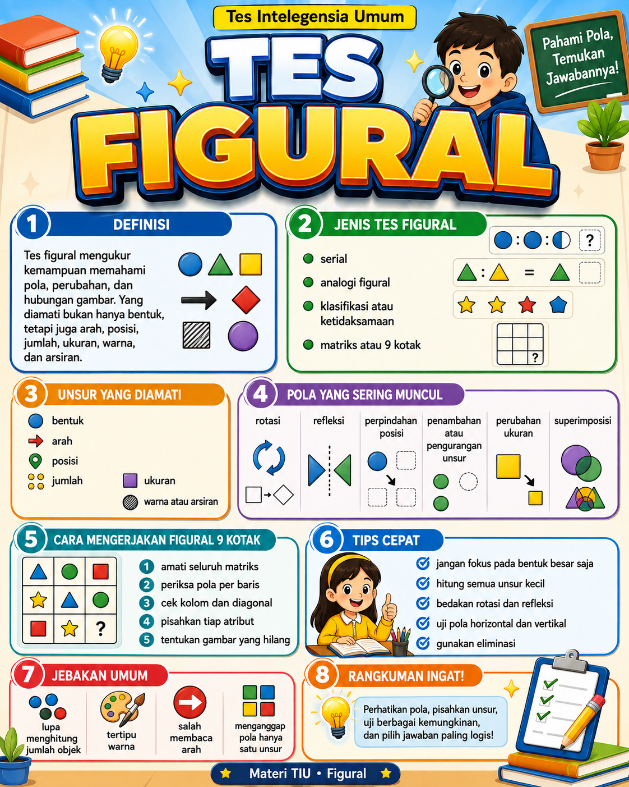
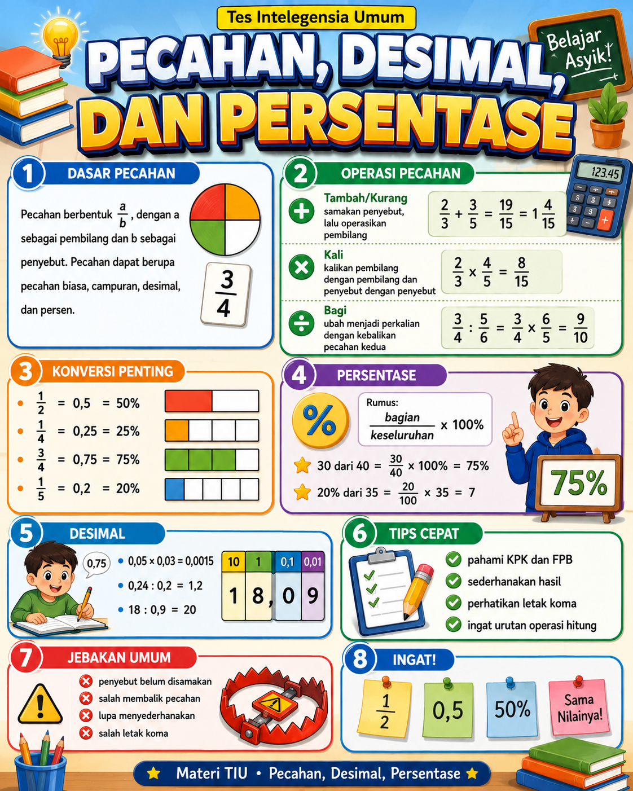
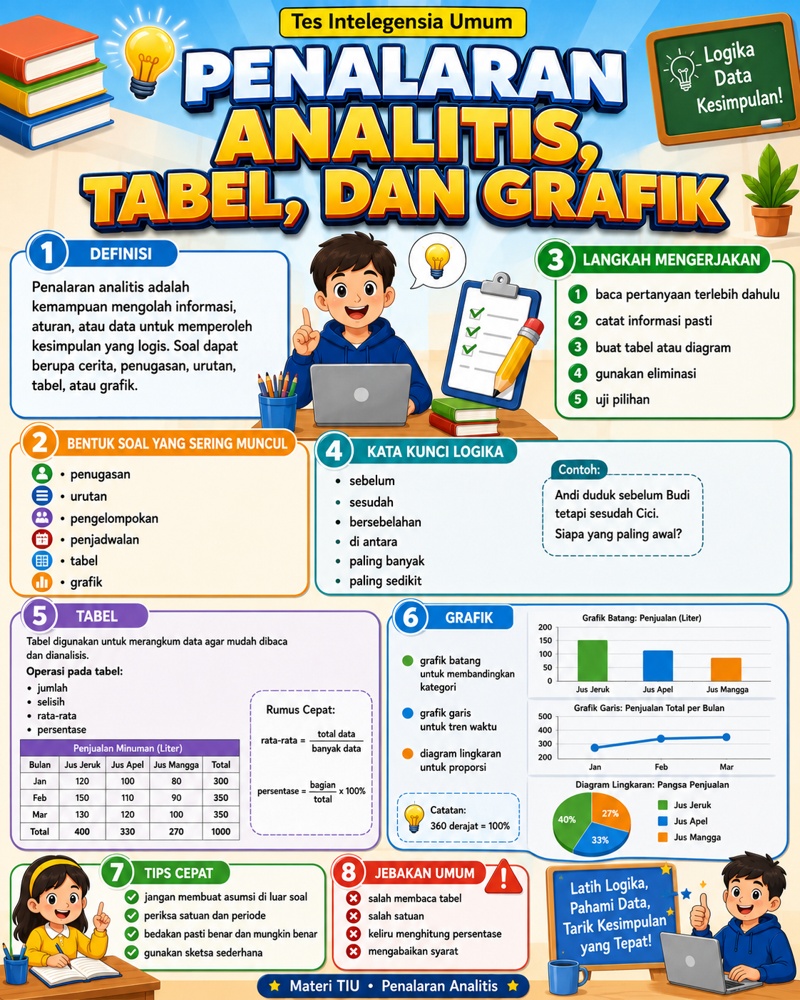
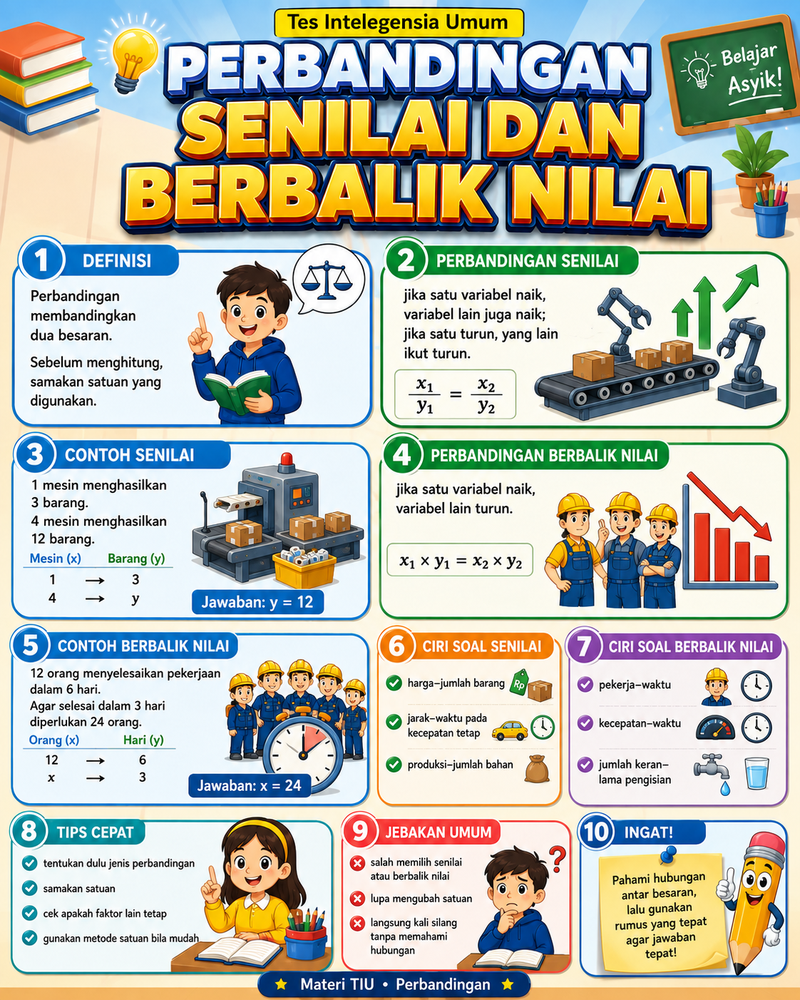
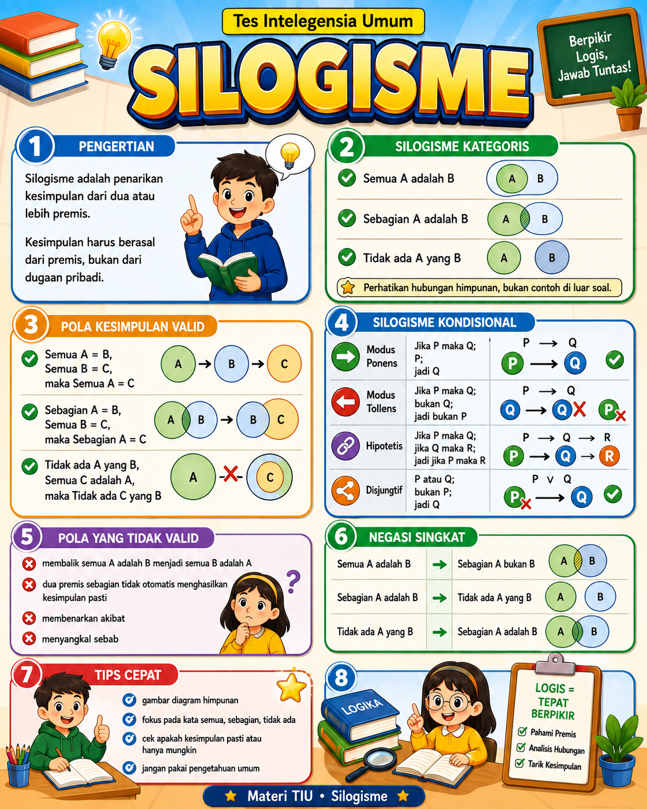

Kuasai Tes Intelegensi Umum CPNS 2026/2027
Akses terpusat untuk seluruh modul, bank soal, dan ringkasan visual. Dirancang untuk persiapan terstruktur dan efisien.
5Modul
8Set Soal
7Infografis
4Asesmen
Bahan Belajar
Kumpulan materi untuk membangun pemahaman Anda.
- 01 Handbook TIU SKD CPNS Seri 1: Kemampuan Verbal Pola analogi, hubungan kata, sinonim dan antonim.
- 02 Handbook TIU SKD CPNS Seri 2: Kemampuan Numerik Deret angka, aritmetika sosial, dan perbandingan kuantitatif.
- 03 Handbook TIU SKD CPNS Seri 3: Kemampuan Figural Pencerminan, rotasi, dan pola bangun untuk soal figural.
- 04 Materi TIU #2: Kemampuan Numerik Ringkasan rumus dan trik hitung cepat untuk soal numerik.
- 05 Modul Harian TIU #7: Kecukupan Data Cara menilai apakah data pada soal sudah cukup untuk menjawab.
Latihan Soal
Kumpulan materi untuk membangun pemahaman Anda.
- 01 50 Soal Hubungan Kuantitas X dan Y Perbandingan dua besaran tanpa hitung penuh.
- 02 50 Soal Perbandingan Kuantitatif (Cerita) Soal cerita perbandingan senilai dan berbalik nilai.
- 03 Deret Angka Model Tabel Pola angka yang disajikan dalam bentuk tabel.
- 04 Deret Angka TIU SKD CPNS Latihan pola bilangan naik, turun, dan berselang.
- 05 Hitung Cepat: Kesetaraan Bilangan Menyamakan bentuk pecahan, desimal, dan persen.
- 06 Kecukupan Data Menentukan cukup atau tidaknya informasi pada soal.
- 07 Pecahan dan Desimal Operasi pecahan, desimal, dan konversinya.
- 08 Silogisme Penarikan kesimpulan dari dua premis.
Asesmen Diagnostik
Kumpulan materi untuk membangun pemahaman Anda.
Berkas Pendukung
Kumpulan materi untuk membangun pemahaman Anda.
Infografis Ringkas
Visualisasi konsep kunci untuk review cepat sebelum ujian.






